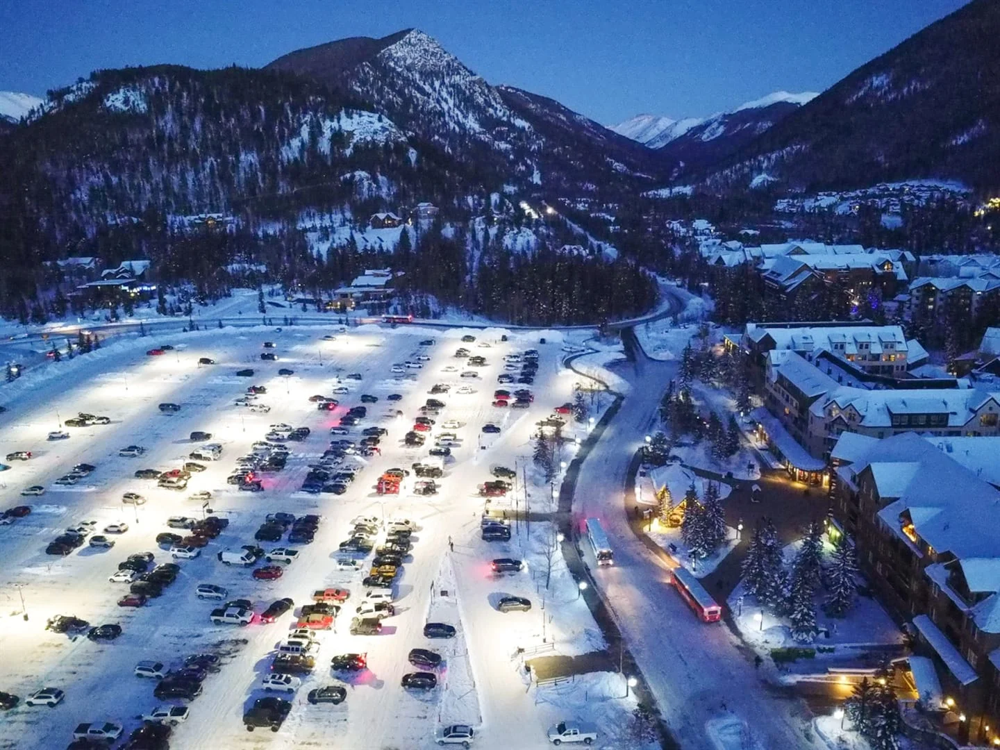
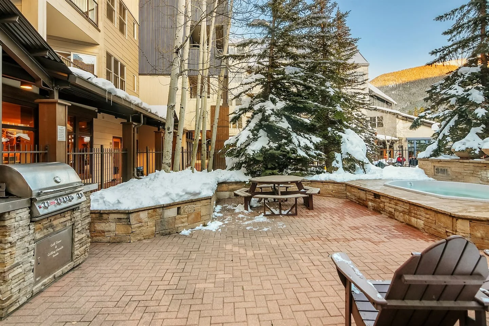

SILVERMILL LODGE · RIVER RUN VILLAGE
A little closer
to everything.
Village mornings. Mountain days.
Your own place in the middle of it all.
MAKE ROOM FOR A GETAWAY
Continue to OwnerRez for availability, pricing and secure booking.
A SMALLER STAY. A LITTLE MORE EASE.
Village life.
Mountain views.
All yours.
A renovated fifth-floor retreat for couples, small families and a few favorite friends. Slow mornings in a king bed. Coffee by the window. Evenings around the fireplace after a day on the mountain.
Step inside ↗
THE VILLAGE AT YOUR DOORSTEP
First chair.
Last soak.
Walk through River Run Village to the gondola in under three minutes. Come home to a soak in the shared courtyard hot tubs, or find your next favorite spot for dinner just outside.
- On-site shared hot tubs & sauna
- Year-round heated pool at nearby Dakota Lodge
- One heated underground parking space
- Private ski locker, fitness center & billiards lounge
A CLOSER LOOK
Picture yourself here.
Your River Run retreat.
A few very good places to unwind.
Select a photo to take a closer look.
BEFORE YOU PACK
A few good
things to know.
How close is the gondola?
The condo is in River Run Village, less than 700 feet from the River Run Gondola. Walk through the village to reach the lift, dining and shops.
Where will everyone sleep?
The one-bedroom condo sleeps up to five, with a king bed, a twin sleeper chair in the bedroom and a pull-out sofa in the living room. There is one full bathroom.
Is parking included?
One heated underground garage parking space and a private ski locker are included. An elevator serves the building. Additional vehicles need separate parking arrangements.
Where are the pool and hot tubs?
The shared hot tubs are on site at Silvermill. The year-round heated pool is accessed at nearby Dakota Lodge. All shared amenities are subject to building access and maintenance.
What are the check-in and check-out times?
Check-in is after 4 PM and check-out is before 10 AM. Already booked? Use the guest guide linked below for arrival instructions.
Where can I see the rental policies?
OwnerRez shows the applicable pricing and booking terms for your selected stay. Review the rental agreement and cancellation policy before completing your reservation.
MAKE IT A MOUNTAIN KIND OF WEEKEND